Photoshop · Multimedia 12 · Sprint 4 · Lessons 1–4 · lighting with adjustments and masks
LAST LIGHT.
Design the superhero movie poster for a film that doesn’t exist yet. Put a hero (the starter photo, or you) into a new world, light them with adjustment layers and masks, and then your director moves the light.
15 illustrated stagesFour lessons (one advanced)Scenario: film poster studioCurves · masks · rim light · atmosphere · type · motion
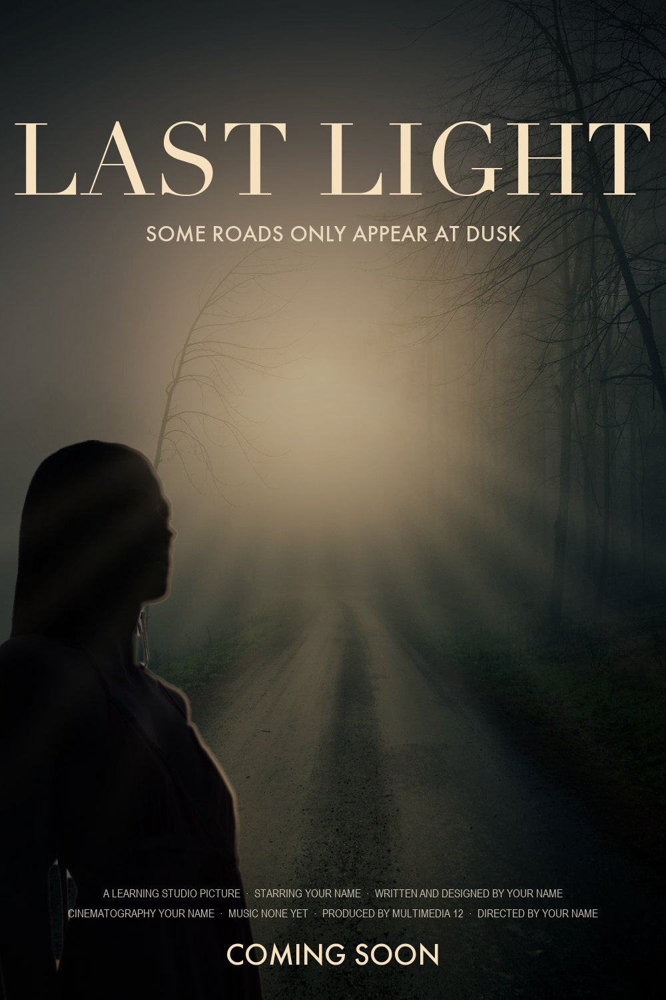
Demo key art built in Photoshop from the class hero image and a free-licence city photo (Erik Mclean, Pexels). Your hero, film and credits are your own.
Light tells the story.
You are a designer at a small studio pitching key art for a new superhero film. Start with the theory deck. The producer wants one image that makes people feel the story before they read a word.
My supports
Turn on any help you want. Your teacher may have set some for you. They change how the guide helps, not what is assessed.
Teacher review edition · repaired 9 October 2026
Text, assessment boundaries, recall and navigation have been repaired. This remains a Draft: complete manual Photoshop verification, action-by-action captures, genuine mistake pairs, rendered motion review and an independent cold run are pending.
Submission: the existing project Knowledge + Reflection Form is linked below. Earlier connection receipts are retained; current school-account accepting state and revised outcome/rubric bindings remain unverified. Journal controls prepare a handoff; they do not submit evidence. No fresh dashboard synchronization is claimed.
Studio brief
Key art for a film called LAST LIGHT (or your own title).
A small production company needs a poster and a 5-second motion teaser for an everyday-hero film. The story: when the city goes dark, one person does not. The audience is teens and adults. The producer’s rule: a green primary blast drives the baseline image. The extension adds a weaker warm source from the opposite side and a small bright chest emitter. Plan every source; each highlight must have a reason.
You will hand in
Light plan (thumbnail with source and arrows)
Poster A and poster B (after the director moves the light) as JPG
5-second teaser MP4
Layered PSD with named groups: MOOD, LIGHT, FIGURE, ATMOSPHERE, TYPE
Three-sentence explanation of the relight
Rules
Original hero only: invent your own. No existing characters, costumes, logos or film titles (they belong to someone else, and this page is public).
Your own photos or the starter pack. You can be the hero: have a classmate photograph you in flat light. Photos of classmates only with their permission.
Guided steps: the Coach can help with terms and tools. Practical check: your decisions only.
Open this project’s existing Form ↗ Use your school account. Earlier release record: 19 October 2026. Current accepting state is unverified. Your teacher releases assessment access.
Studios commission “key art”: the single image used on posters, streaming tiles and billboards. Designers build it in Photoshop from photographs, and they light it the way a cinematographer lights a set. Every highlight is motivated by a source the audience can believe. S1
Posters follow conventions viewers read without thinking: a title with one strong typeface, a tagline, and a condensed billing block of credits at the bottom. S2 Today most key art also ships as a motion poster.
For teacher prep or extension: Nour Art’s Spider-Man manipulation and Hazy Graphix’s Avengers remake. These are great techniques, but they use existing characters, so your poster must be original.
Knowledge first
How light works, and how Photoshop fakes it.
Light obeys rules
Direction: light travels in straight lines from its source. Highlights face the source; shadows point away.
Fall-off: light gets dimmer with distance, so it is brightest at the source and fades smoothly.
Colour: the demo uses a stylised green energy light, teal shadows and later warm accents. Physical colour temperature and a fictional green effect are different ideas.
Edges catch light: the edge of a subject turned towards a source gets a rim highlight.
Air shows light: fog, dust and smoke make beams and glow visible.
Design principles in a poster
Emphasis and focal point: the brightest, highest-contrast area is where the eye goes first, so put the story there. Value contrast: a dark world makes the light read as bright. Colour harmony: controlled green/teal and later warm accents distinguish illuminated surfaces from the night scene. Hierarchy in type: title, then tagline, then credits.
The Photoshop method
Never paint light directly on the photo. Use adjustment layers (Curves) with masks: an inverted mask hides the adjustment everywhere, and a soft white brush paints it back only where light lands. Blend modes add colour (Soft Light) and glow (Screen, Color Dodge). Because it stays on layers, you can move or animate the light later.
What this assesses
Skills you will show.
Skill (registered ID)
Where you show it
Match light and colour · PS-LGT-02 · Dodge and burn · PS-LGT-01
Steps 4–8, 10–12 and the practical check (step 14)
Adjustment layers · PS-ADJ-01 · Levels and Curves · PS-TON-01
Primary achievement evidence: include the approved plan, distinct thumbnail alternatives and reasoned selection, editable source, observed revision and defence. the relight (step 14) and its explanation. Guided steps, supports and the guided teaser are practice and presentation, recorded separately from achievement. Sprint: mm12-26-s04.
Image and motion evidence · course alignment
Image evidence: 1.1–1.5. Motion evidence: 2.1, 2.3–2.5 only where an actual motion product is made and tested. Cultural/historical analysis of other motion graphics (2.2) remains a separate requirement. Teacher review determines achievement.
Local mappings are proposed; existing live Form/registry bindings are unchanged. An approved project rubric binding is still required.
Session A · Lesson 1 · mm12-26-s04-d01
Set the mood. Paint the light.
Every cinematic poster starts with one decision: where is the light coming from? Today you build the poster file, darken the world and paint light back in with a mask.
TODAYEstimated 70-minute route: recall 5; theory/model 8; construction 37; check/practice or independent evidence 15; save/next target 5. Continue unfinished construction in the next studio block. Timing is not yet classroom-piloted.
01
Read the brief and plan the light
Procedure status · not yet run end to end. Manual action captures and genuine lesson mistake pairs are incomplete. Earlier scripted-demo pictures do not prove the procedure. Ask for a demonstration of unfamiliar controls.
IN SHORTGenerate three concepts; choose and justify one; plan its source, direction and lit surfaces.
READ ALOUD
DOCUMENT: This guide · a sketch page or LastLight_plan.txt SELECT: One light source and where it sits TOOLS / ROUTE: Thumbnail · arrow for light direction
Read or listen to the theory deck, then the film brief in Start. Invent your hero’s film title and a one-line story (or use LAST LIGHT).
Choose your background plate: one of your own Shot on Purpose photos, or city_photo.jpg from the class folder. Choose your hero: the class hero.png, or a photo of yourself in a hero pose taken in flat, even light.
Decide what makes the light: a sunset, a lamp, a doorway, a torch, headlights, a window. It must be something that could really exist in the scene.
Draw three genuinely different 2:3 concept thumbnails for your film. Vary the visual idea or composition, not just the colour. Mark each source and its light direction.
Select one concept. Give an audience/design reason for choosing it and rejecting the other two; identify a trade-off. On the selected plan, circle the surfaces the light reaches.
STEP CHECKLIST
GLOSSARY
Motivated light: Light that has a believable source in the scene
Plate: The background photo a composite is built on
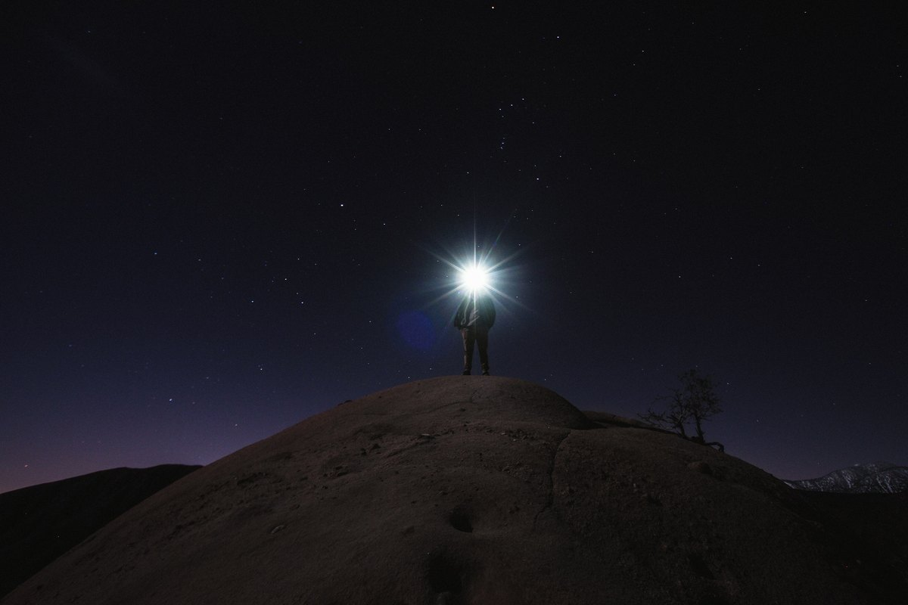
Motivated light in a real photo: one torch explains every bright surface and the direction of every shadow.
WHYFilm lighting is motivated: every highlight has a believable source. When the light has a reason, the viewer believes the world.
CHECKThree different concepts, a reasoned selection, title/story and a chosen light plan with source, arrows and lit surfaces.
FIXCan’t decide? Pick a source that is inside the frame, like a doorway or lamp. It is the easiest to make believable.
WORKED EXAMPLE · DIFFERENT OBJECTA student planned “The Late Shift”: one open fridge door in a dark kitchen lit the figure’s face and spilled across the floor.
STRETCH (AFTER THE CHECK PASSES)Add a second, weaker source (a phone screen, the moon) and decide its colour. Keep it clearly less bright than the main one.
Method basis: S1. Values and sequence are authored for this project.
Review the context before opening the Coach; nothing is sent automatically.
Optional process note · Save to my journal
Notes save on this device. Review and paste in Student OS to save there; this button does not submit evidence.
02
Build the poster file and cut out the figure
Procedure status · partial author run from blank. New document creation and the city placement/name/horizontal flip were performed in Photoshop 2026. Five action captures are available for this portion. Figure placement, masking and the rest of the full manual reconstruction are pending; this is not an independent cold run.
IN SHORTNew 1600 × 2400; place plate and figure; Select Subject; mask; name layers.
READ ALOUD
DOCUMENT: LastLight_YourName.psd · starter pack SELECT: The plate and your figure TOOLS / ROUTE: File › New · Place Embedded · Select › Subject · layer mask
Press Ctrl/Cmd+N. Name the file LastLight_YourName. Use Width 1600 px, Height 2400 px, Resolution 150 ppi, RGB / 8 bit, white background, sRGB and square pixels. Choose Create.
Choose File › Place Embedded. Select city_photo.jpg from the extracted starter pack, then click Place.
The supplied city photo is 2400 × 3593 pixels, with 72 ppi metadata. In this 150 ppi document, the observed Place Embedded values were X 800 px, Y 1200 px, W/H 32%, rotation 0°. Keep proportions linked. Inspect all four edges before pressing Enter: this auto-fit can leave a thin white border. A linked 32.1% fill is calculated but not yet run or captured.
Double-click the city layer name and enter PLATE. Select PLATE, then choose Edit › Transform › Flip Horizontal to match the demo’s city orientation.
Figure route (not yet run in this fresh author file): File › Place Embedded, choose hero.png, and commit the placement. Preserve the Smart Object.
For a new photo, select the figure layer, choose Select › Subject, then Add layer mask. The class PNG already has transparency. This figure/mask route is not yet run in the fresh file.
The original scripted reference enlarges the auto-fitted figure by 118% relative to its initial placement and moves its centre to X 840, Y 1530. Do not enter 118% as an absolute source-image scale. Manual reproduction and control captures are pending.
Name it FIGURE. Check its large scale against the original reference: the hero occupies the left two thirds and the source has room on the right. Save the layered PSD; this save route still needs a fresh capture.
Action by action: real Photoshop screenshots (orange boxes show where to look), and the result
1Create the document with the six boxed settings. This creation was run; the result crop shows the right portion of the new blank canvas before placing the city.
In Photoshop
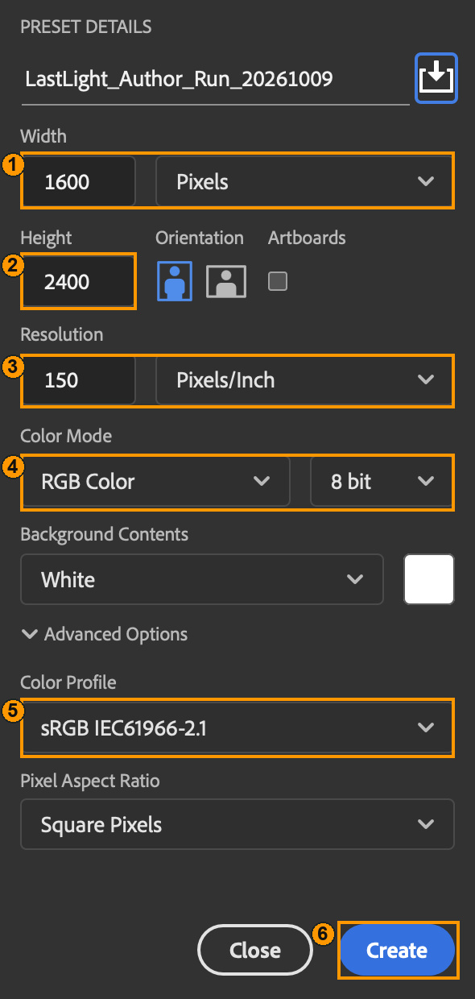
1 Width; 2 Height; 3 Resolution; 4 RGB/8 bit; 5 sRGB; 6 Create.It should look like thisCropped right portion of the actual blank canvas. Raw capture retains the File menu opened for the next action.
2Open File and choose Place Embedded. This keeps the photographic source editable.
In Photoshop
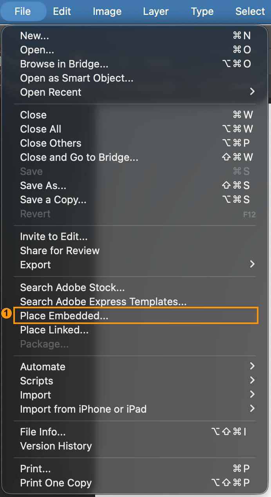
1: Place Embedded in the real open File menu.It should look like this
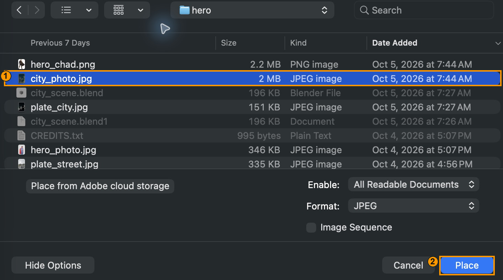
The real file chooser: city_photo.jpg selected (1), Place (2).
3The fresh run showed X 800, Y 1200, W/H 32%. Check the canvas edges before committing; the fill correction is still pending. Name the resulting Smart Object PLATE.
In Photoshop
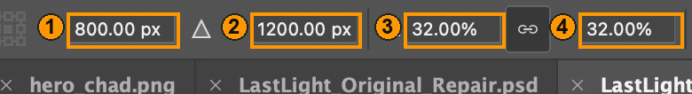
1 X; 2 Y; 3 W; 4 H. Observed auto-fit values; a thin border still needs correction and a fresh capture.It should look like this
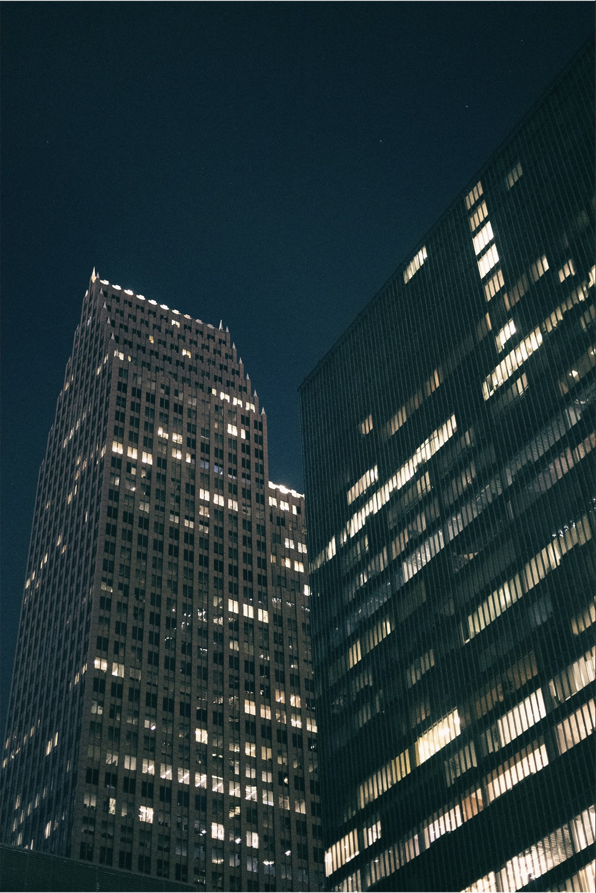
Actual placement before the flip. The tallest facade is on the right; full edge coverage is not yet verified.
4With PLATE selected, choose Edit › Transform › Flip Horizontal. This matches the orientation used in the original poster.
In Photoshop
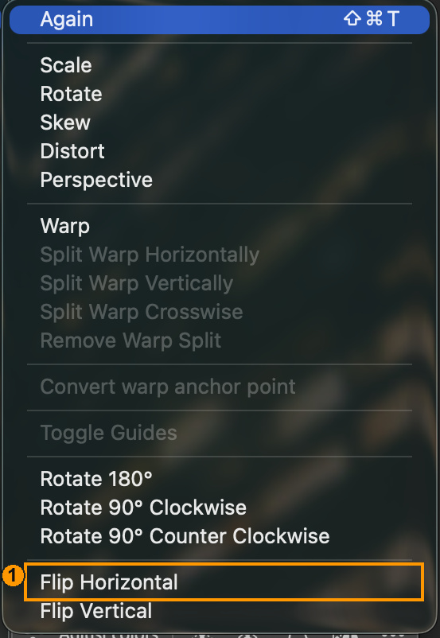
1: Flip Horizontal in the actual open Transform submenu.It should look like this
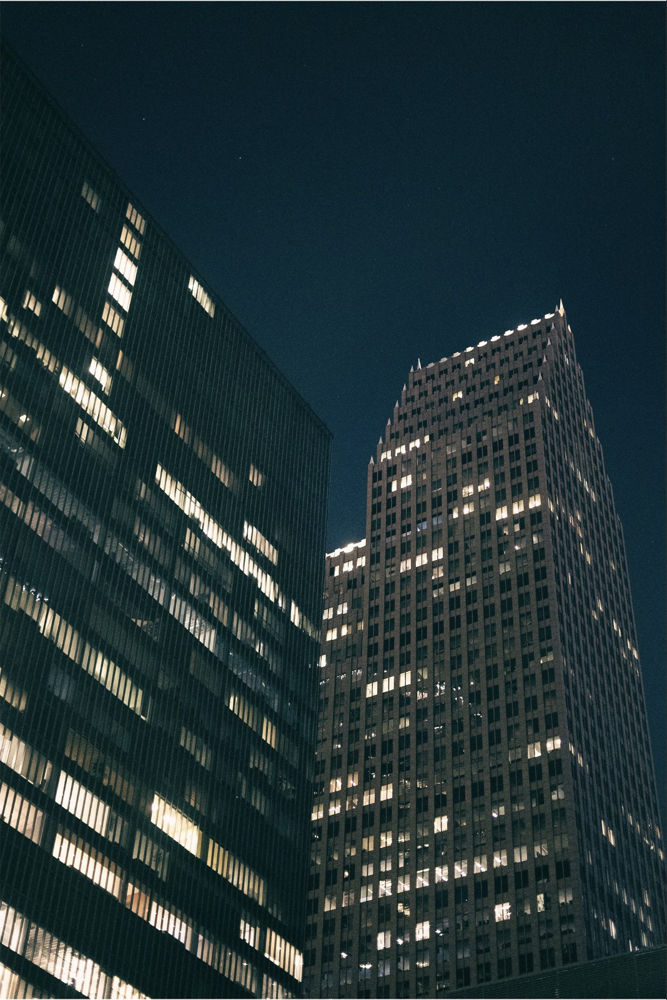
Verified flipped orientation: the tallest facade is on the left. Edge fitting and figure construction remain pending.
STEP CHECKLIST
GLOSSARY
Layer mask: A greyscale map on a layer: white shows, black hides
Select Subject: Photoshop’s automatic selection of the main subject
WHYSmart Objects and masks keep everything editable, so you can move the light later without starting again. You will need that in the practical check.
CHECKA 1600 × 2400 file with a PLATE and a masked FIGURE, both Smart Objects, with the light source visible beside the hero.
FIXSelect Subject missed hair? In the mask, paint black to hide and white to reveal with a soft brush. Figure looks pasted on? Wait: the next steps fix the light.
WORKED EXAMPLE · DIFFERENT OBJECTThe demo hero fills the left two thirds of the frame, so the green blast shows beside him on the right.
STRETCH (AFTER THE CHECK PASSES)Cut out a second, smaller figure far down the road for depth.
Method basis: A2. Values and sequence are authored for this project.
Review the context before opening the Coach; nothing is sent automatically.
Optional process note · Save to my journal
Notes save on this device. Review and paste in Student OS to save there; this button does not submit evidence.
03
Set the mood: darken the whole world
Procedure status · not yet run end to end. Manual action captures and genuine lesson mistake pairs are incomplete. Earlier scripted-demo pictures do not prove the procedure. Ask for a demonstration of unfamiliar controls.
IN SHORTCurves darken; cool Soft Light fill; group as MOOD.
READ ALOUD
DOCUMENT: LastLight_YourName.psd SELECT: Everything (the adjustment sits at the top) TOOLS / ROUTE: Layer › New Adjustment Layer › Curves · Solid Color
Click the top layer, then add a Curves adjustment layer. Name it MOOD darken.
In MOOD darken, use RGB curve points 0→0, 128→92 and 255→215. These are the original demo values; this complete adjustment creation route is not yet run manually.
Add MOOD cool as Solid Color #0A3C46 (RGB 10, 60, 70), Soft Light, Opacity 40%. This preserves the original teal shadows. Complete creation and capture are still pending.
Compare before and after by clicking the eye icons. The scene should feel quiet and cold before any light returns.
Group the two layers (Ctrl/Cmd+G) and name the group MOOD.
Action by action: real Photoshop screenshots (orange boxes show where to look), and the result
1Layer › New Adjustment Layer › Curves. Drag the middle of the line down.
In Photoshop
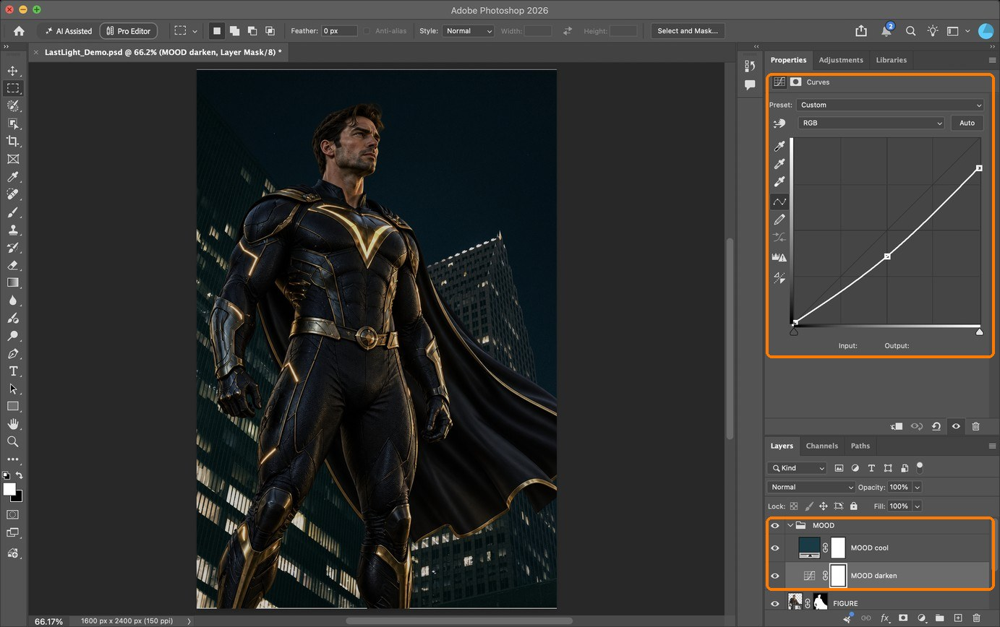
Boxes: the Curves line pulled down in Properties; the MOOD group with MOOD darken and the blue MOOD cool fill.It should look like this
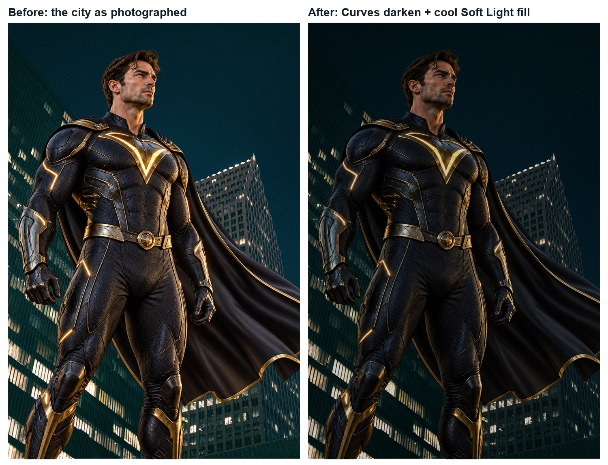
Before and after.
STEP CHECKLIST
GLOSSARY
Curves: An adjustment that remaps brightness; dragging the middle changes midtones
Soft Light: A blend mode that tints and adds gentle contrast
Left: the starting plate. Right: a Curves darken plus a cool Soft Light fill. Now there is room for the light to shine.
WHYLight only reads as bright against darkness. Darkening first gives your light somewhere to go.
CHECKThe scene is clearly darker and cooler, the planned light area is still the lightest part, and the MOOD group can be switched off.
FIXEverything muddy? Drag the top point of the curve back up slightly. Too blue? Lower the fill opacity.
WORKED EXAMPLE · DIFFERENT OBJECTA night-time bus-stop poster used the same move: darken everything, then let the shelter light pull you in.
STRETCH (AFTER THE CHECK PASSES)Try a warm-dark version (brown fill) and a cold-dark version (blue fill). Which fits your story?
Method basis: A1 · V3. Values and sequence are authored for this project.
Review the context before opening the Coach; nothing is sent automatically.
Optional process note · Save to my journal
Notes save on this device. Review and paste in Student OS to save there; this button does not submit evidence.
04
Paint the light back in through a mask
Procedure status · partial application check. Original poster · Curves control checked in Photoshop 2026 on this Mac. The original mask construction was scripted; the full hand-painted reconstruction remains unverified. Full action coverage and the independent cold run remain pending.
IN SHORTCurves up; invert mask; soft white brush at low opacity; build light out from the source.
READ ALOUD
DOCUMENT: LastLight_YourName.psd SELECT: The area your light source should brighten TOOLS / ROUTE: Curves · Ctrl/Cmd+I on the mask · Brush (B), soft, 10–20 % opacity
Add a Curves adjustment above MOOD named LIGHT paint. Set RGB points 0→0, 90→175 and 255→255. The original 90→175 point has been checked on screen.
Click its white mask thumbnail and press Ctrl/Cmd+I to invert it to black. The brightening disappears.
Start at your light source and paint outward in short strokes, building up light where it is strongest and letting it fade with distance.
Paint the light onto the surfaces you circled in your plan: the ground in front of the source, the side of the figure facing it.
Action by action: real Photoshop screenshots (orange boxes show where to look), and the result
1Select LIGHT paint’s adjustment thumbnail. Click the existing curve point and read Input 90 / Output 175. These lift dark midtones; the black mask controls where the lift appears.
In Photoshop
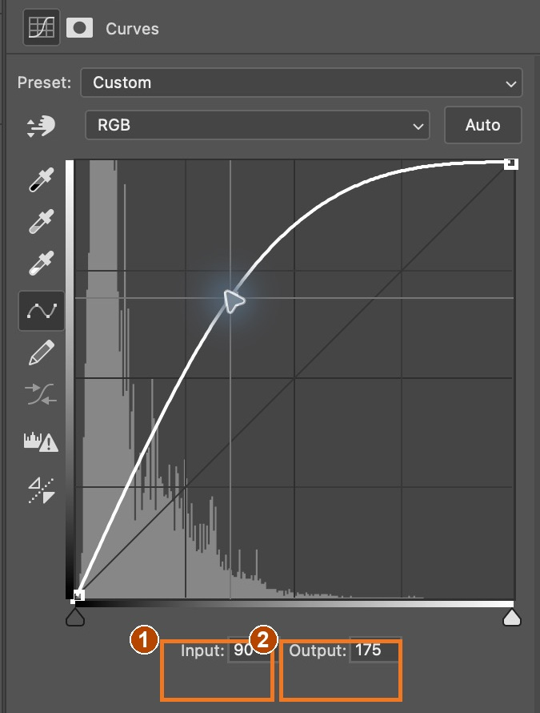
1: Input 90. 2: Output 175 in the original LIGHT paint adjustment.It should look like this
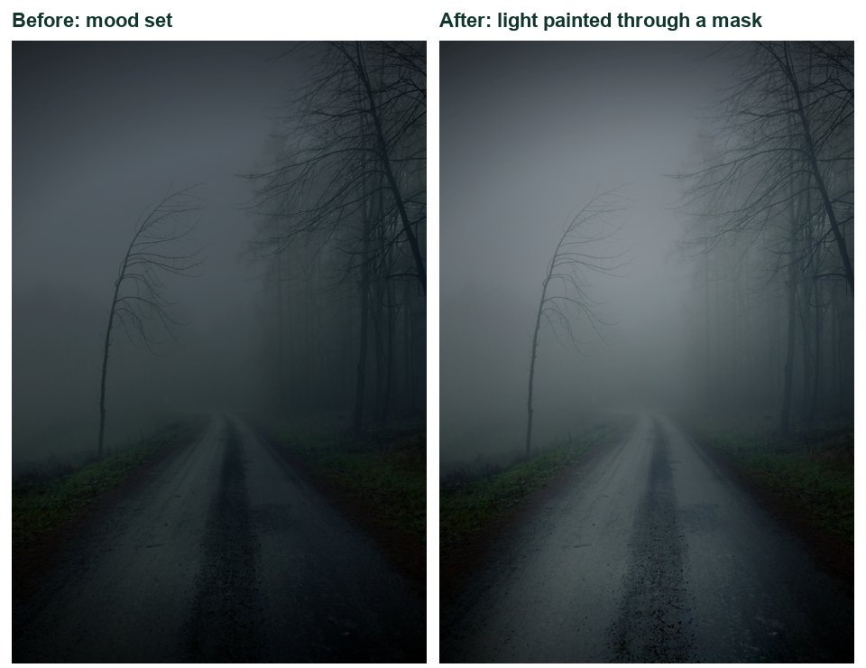
Original scripted construction, before and after the light mask. The full manual painting sequence is not yet run to the same result.
STEP CHECKLIST
GLOSSARY
Invert a mask: Swap black and white, so the adjustment is hidden everywhere until you paint it in
Fall-off: Light getting dimmer the further it travels from its source
Before and after painting light. It is brightest at the source and fades with distance, following the plan.
WHYAn inverted mask hides the adjustment everywhere, so you choose exactly where light lands. Low opacity lets you build it gradually, like real light falling off.
CHECKThe light is brightest at its source, falls off smoothly, and lands only on the surfaces the plan says it should.
FIXHard edges? Your brush hardness is above 0 %. Too strong? Paint black at low opacity to pull it back, or lower the layer opacity.
WORKED EXAMPLE · DIFFERENT OBJECTBenny Productions paints highlights on a portrait the same way: one Curves layer, black mask, soft white brush.
STRETCH (AFTER THE CHECK PASSES)Add a second LIGHT paint layer just for the brightest core, with a smaller brush.
Method basis: A1 · A2 · V1 · V2. Values and sequence are authored for this project.
Review the context before opening the Coach; nothing is sent automatically.
Optional process note · Save to my journal
Notes save on this device. Review and paste in Student OS to save there; this button does not submit evidence.
05
Read and shape the mask
Procedure status · partial application check. Original poster · Channels isolation and mask Properties were run in Photoshop 2026 on this Mac. Feather 30 px was applied to a separate repair copy; Density remains 100%. Full action coverage and the independent cold run remain pending.
IN SHORTView the mask; smooth it; feather; keep Density 100 %; adjust layer opacity; save.
READ ALOUD
DOCUMENT: LastLight_YourName.psd SELECT: The LIGHT paint mask TOOLS / ROUTE: Channels › mask visibility / RGB visibility · Properties › Feather and Density
Click LIGHT paint’s mask. Open Channels, turn the LIGHT paint Mask eye on, then turn the RGB eye off to read the mask alone.
Check the shape: it should be a soft pool that is brightest at the source and fades out, with no stripes or blotches.
Smooth stripes with a large soft brush at low opacity. Restore colour: turn the mask eye off, click RGB, then return to Layers.
With the mask selected, open Properties and set Feather to 30 px. Keep Density at 100%.
Keep mask Density at 100 %. Lower the LIGHT paint layer opacity to reduce the adjustment strength. Lower Density reveals the adjustment across hidden areas and can destroy the intended isolation. Save your file.
Action by action: real Photoshop screenshots (orange boxes show where to look), and the result
1With LIGHT paint’s mask selected, open Channels (1). Turn LIGHT paint Mask visibility on (2), then turn RGB visibility off (3). Read white as light revealed and black as light hidden.
In Photoshop
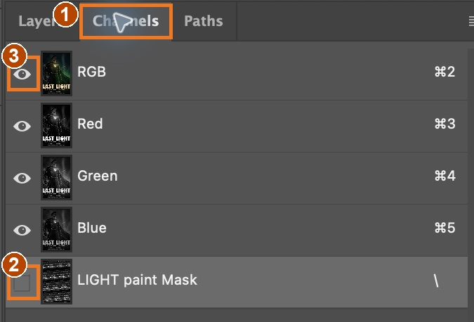
1: Channels. 2: mask visibility. 3: RGB visibility. This is the verified alternative to Option-click.It should look like this
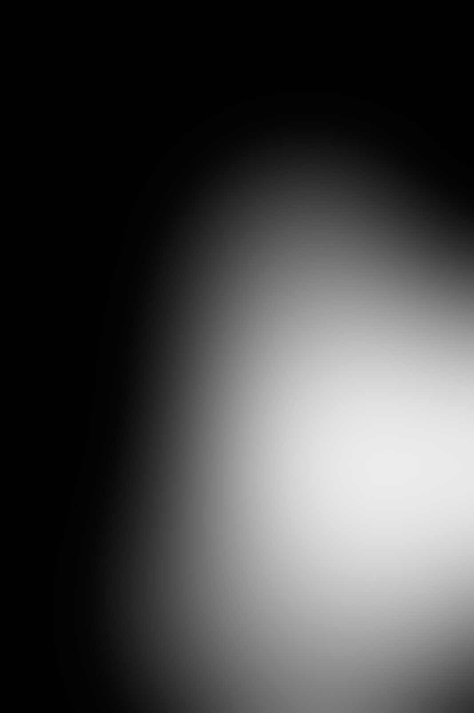
The original light mask isolated in greyscale. The pool has a gradual fall-off.
2To restore the image, turn the mask eye off, click the RGB channel row, and return to Layers. The colour poster should return.
In Photoshop
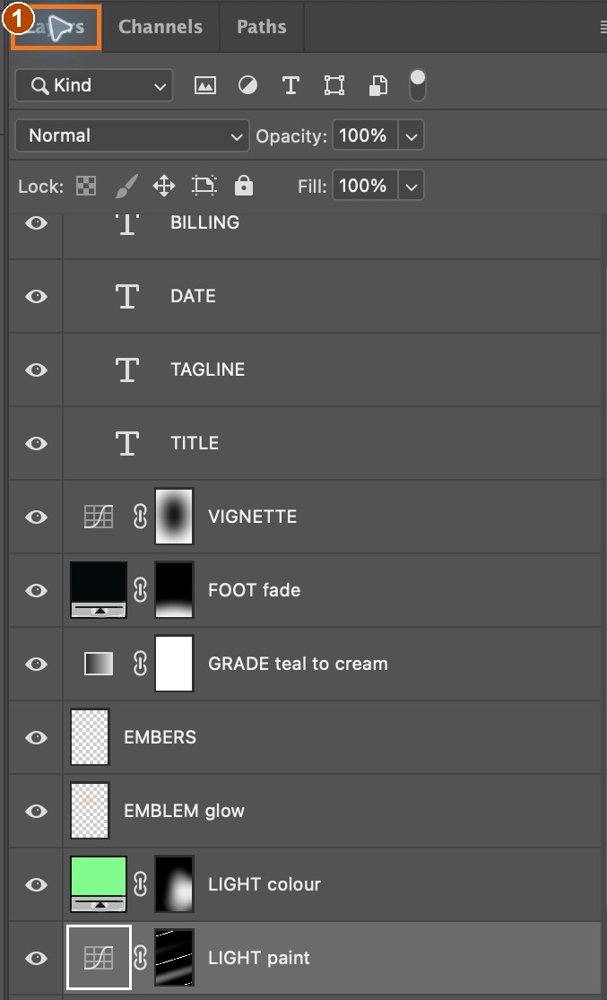
1: Layers tab, after the RGB image was restored.It should look like this
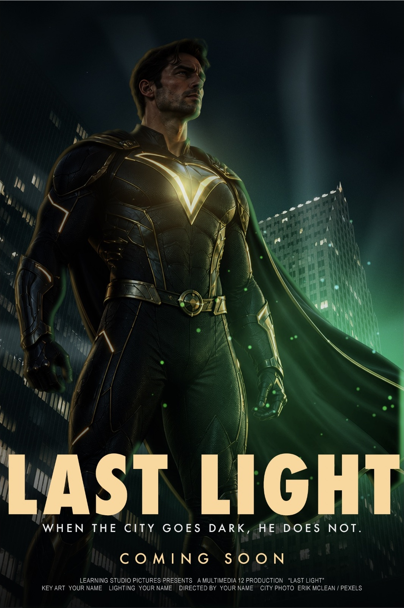
The original poster returns with its lighting intact.
3Click the mask thumbnail and open Properties. Keep Density at 100% (1). Enter Feather 30 px (2) to soften transitions without revealing the adjustment everywhere.
In Photoshop
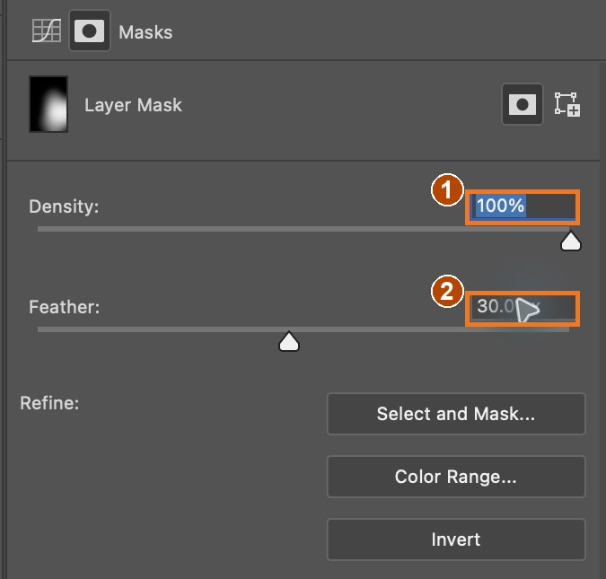
1: Density 100%. 2: Feather 30 px. Applied in the repair copy.It should look like thisThe repaired copy preserves the original composition and blended lighting.
STEP CHECKLIST
GLOSSARY
Feather: Softens a mask’s edges without repainting
Density: How strongly a mask hides; lower density lets some of the effect through everywhere
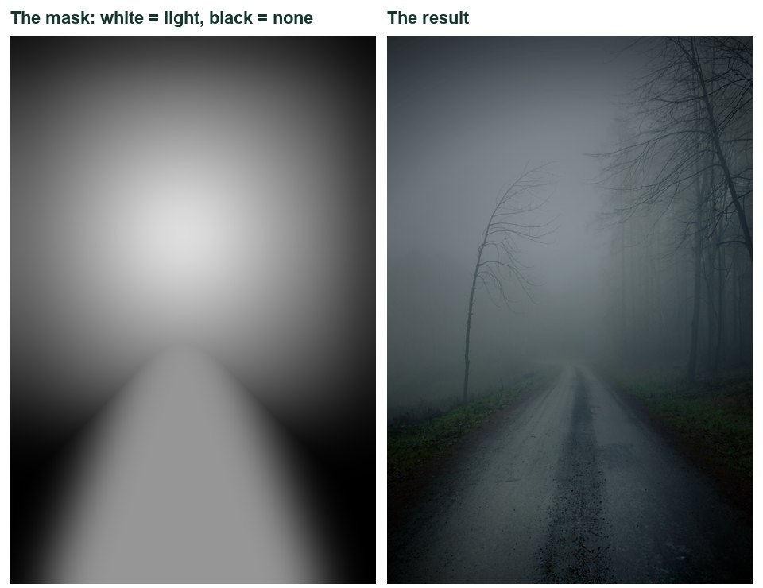
Left: the mask on its own; white is where the light lands. Right: the result it produces.
WHYThe mask is the light. Learning to read it tells you exactly why the image looks the way it does.
CHECKA smooth mask with no stripes, brightest at the source, and a result that looks like light rather than paint.
FIXRed overlay instead of greyscale? RGB is still visible: turn its eye off. To restore colour, hide the mask channel and click RGB. Feather unavailable? Select the mask thumbnail.
WORKED EXAMPLE · DIFFERENT OBJECTA student found a stripe in the mask across the sky that they had never noticed in the image. It was a single hard brush stroke.
STRETCH (AFTER THE CHECK PASSES)Duplicate the mask to a new Curves darken layer and invert it, so the areas furthest from the light fall into shadow.
Method basis: A2. Values and sequence are authored for this project.
Review the context before opening the Coach; nothing is sent automatically.
Optional process note · Save to my journal
Notes save on this device. Review and paste in Student OS to save there; this button does not submit evidence.
Session B · Lesson 2 · mm12-26-s04-d02
Colour the light. Make the figure belong.
Real light has a colour and hits edges. Today the light gains colour, the figure catches it, and the air fills with glow.
TODAYEstimated 70-minute route: recall 5; theory/model 8; construction 37; check/practice or independent evidence 15; save/next target 5. Continue unfinished construction in the next studio block. Timing is not yet classroom-piloted.
06
Colour the green energy light
Recall first (from last lesson, no peeking):
What does “motivated light” mean?
Why darken the whole picture before adding any light?
What does an inverted (black) mask do to an adjustment layer?
Say or write your answers, then check them against your file.
Procedure status · partial application check. Original poster · the colour picker, Soft Light dropdown and layer opacity were inspected and the picker/dropdown confirmed in Photoshop 2026. The original mask was scripted; the complete copy-mask creation sequence is still pending. Full action coverage and the independent cold run remain pending.
IN SHORTGreen Solid Color #46FF82 on Soft Light at 70 %; copy the light mask.
READ ALOUD
DOCUMENT: LastLight_YourName.psd SELECT: The green-lit area and the contrasting shadows TOOLS / ROUTE: Solid Color fill · Soft Light · paste the light mask
Add a Solid Color fill layer in the demo green #46FF82 (RGB 70, 255, 130). Set it to Soft Light and name it LIGHT colour.
Alt/Option-drag the LIGHT paint mask onto LIGHT colour to copy it, so the colour lands only where the light does.
Set its layer opacity to 70 % for the demo. Adjust for your own source after comparing the result.
Compare the green-lit surfaces with the teal shadows. The later extension adds warm light; green is a stylised energy colour, not a physical colour-temperature measurement.
Write the hex codes of your light colour and shadow colour in your plan.
Action by action: real Photoshop screenshots (orange boxes show where to look), and the result
1Double-click LIGHT colour’s colour thumbnail. Enter #46FF82 (1), then click OK (2). The demonstrated RGB values are 70, 255, 130.
In Photoshop
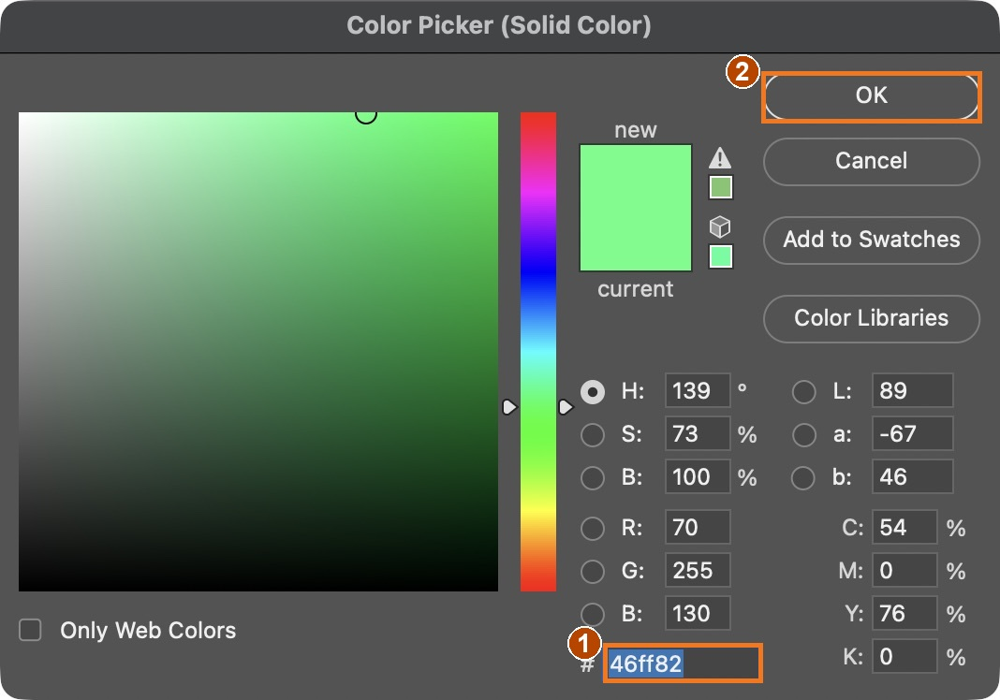
1: hexadecimal colour. 2: OK. This is the original layer’s actual colour.It should look like this
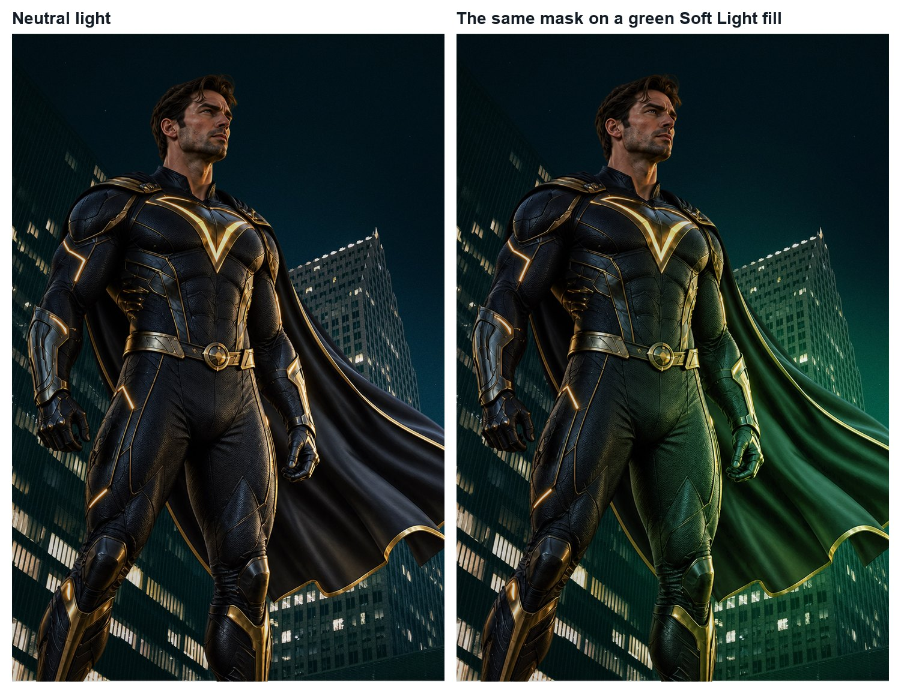
Original scripted result comparison: neutral light becomes green reflected light.
2With LIGHT colour selected, open the blend-mode dropdown and choose Soft Light (1). This blends colour into existing surfaces while preserving their texture.
In Photoshop
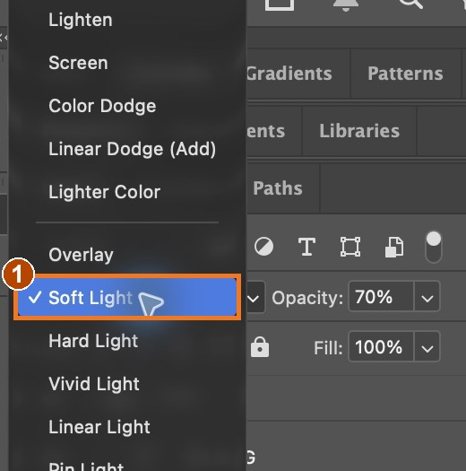
The real dropdown is open; 1 boxes Soft Light.It should look like thisGreen light belongs to the right-facing cloth and armour; it does not obscure the subject as a flat painted patch.
3Confirm LIGHT colour and its mask (1), Soft Light (2), and layer Opacity 70% (3). Compare the lit cape with the unlit left side.
In Photoshop
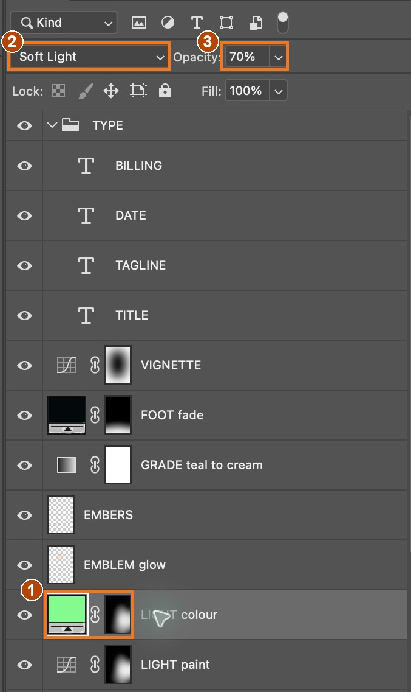
1: LIGHT colour and mask. 2: Soft Light. 3: layer Opacity 70%.It should look like thisTexture and dark shadows remain readable under the light.
Blend-mode comparison · tested in the original PSD. I deliberately changed LIGHT colour from Soft Light to Normal, captured the result, then restored Soft Light. Colour #46FF82, the mask and Opacity 70% stayed the same. This isolates one variable; it is not an accidental build mistake or a complete reconstruction.
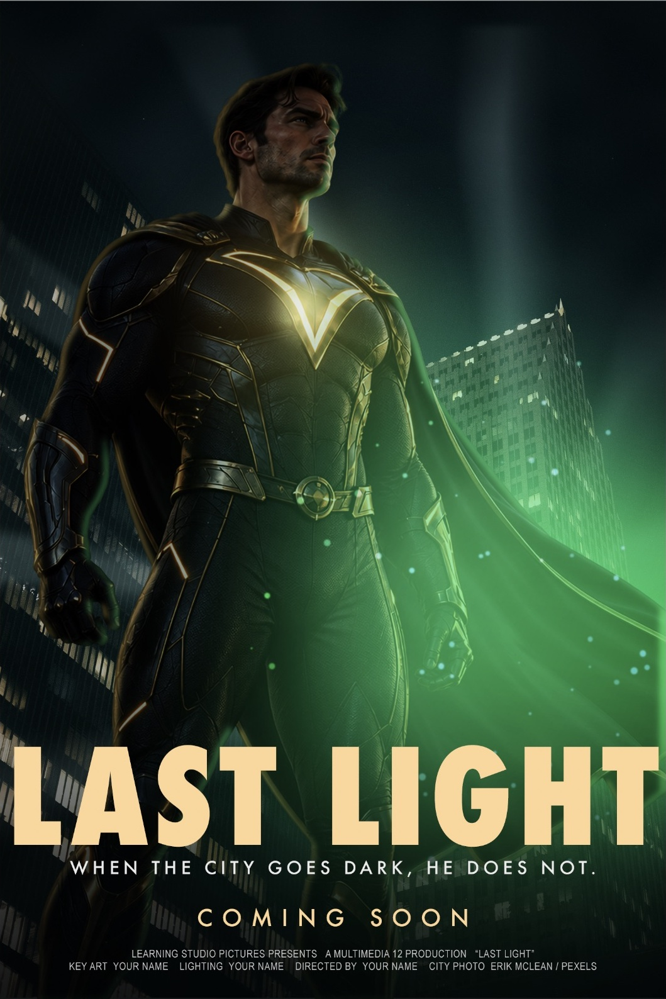
Wrong for this lighting: Normal covers the cloth and armour with green, weakening texture and shadow.
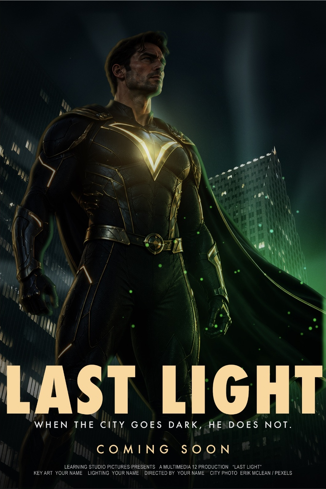
Intended result: Soft Light colours the existing illumination while keeping surfaces and shadows readable. Fix: choose Soft Light; do not add more green paint.
STEP CHECKLIST
GLOSSARY
Colour temperature: A description of the warm/cool appearance of a light source; the green energy effect is a stylised palette choice.
Blend mode: The rule Photoshop uses to combine one layer with those beneath it.
Before: neutral light. After: the same mask filled with green colour on Soft Light at 70 %.
WHYSoft Light tints existing brightness and texture. Green against dark teal separates the illuminated surfaces; the later gold accents introduce a warm contrast.
CHECKThe lit area is green, and the unlit areas retain their grade, and the colour follows the light mask exactly.
FIXColour everywhere? The mask was not copied: Alt/Option-drag the mask thumbnail. Colour too strong? Lower layer opacity while leaving mask Density at 100 %.
WORKED EXAMPLE · DIFFERENT OBJECTMovie posters use warm skin against teal backgrounds so often that it has a nickname: “orange and teal”.
STRETCH (AFTER THE CHECK PASSES)Try a cool light source instead (a phone or moon) with warm shadows. How does the story change?
Method basis: A3 · V3. Values and sequence are authored for this project.
Review the context before opening the Coach; nothing is sent automatically.
Optional process note · Save to my journal
Notes save on this device. Review and paste in Student OS to save there; this button does not submit evidence.
07
Make the figure belong: match it and add a rim light
Procedure status · not yet run end to end. Manual action captures and genuine lesson mistake pairs are incomplete. Earlier scripted-demo pictures do not prove the procedure. Ask for a demonstration of unfamiliar controls.
IN SHORTClip a Curves to darken; clipped RIM layer on Screen at 70 %; paint the light-facing edge only.
READ ALOUD
DOCUMENT: LastLight_YourName.psd SELECT: The FIGURE layer and the edge that faces the light TOOLS / ROUTE: Clipped Curves · new layer, Color Dodge or Screen · soft brush
Add FIGURE darken directly above FIGURE: RGB 0→0, 128→74, 255→210. Clip it to FIGURE. These original values are scripted-reference values; full creation is not yet run manually.
Add an empty RIM layer above FIGURE darken and clip it to FIGURE. Use Screen, layer opacity 70%, and the original green #78FFA0 (RGB 120, 255, 160). The original edge selection was scripted; manual creation is not yet run.
Use a soft brush at low opacity to build a narrow rim on the edge facing the green source on the right. The original selection used a 16 px offset and 7 px blur; a matching manual brush width still needs to be tested.
Make the rim strongest where the edge turns most directly towards the light (forehead, nose, shoulder), and let it fade away round the back.
Before the later extension, check that each green highlight faces the primary blast on the right. Do not paint the entire outline equally.
Action by action: real Photoshop screenshots (orange boxes show where to look), and the result
1Curves clipped to FIGURE to darken it; then a new clipped layer, RIM, painted along the edge that faces the light.
In Photoshop
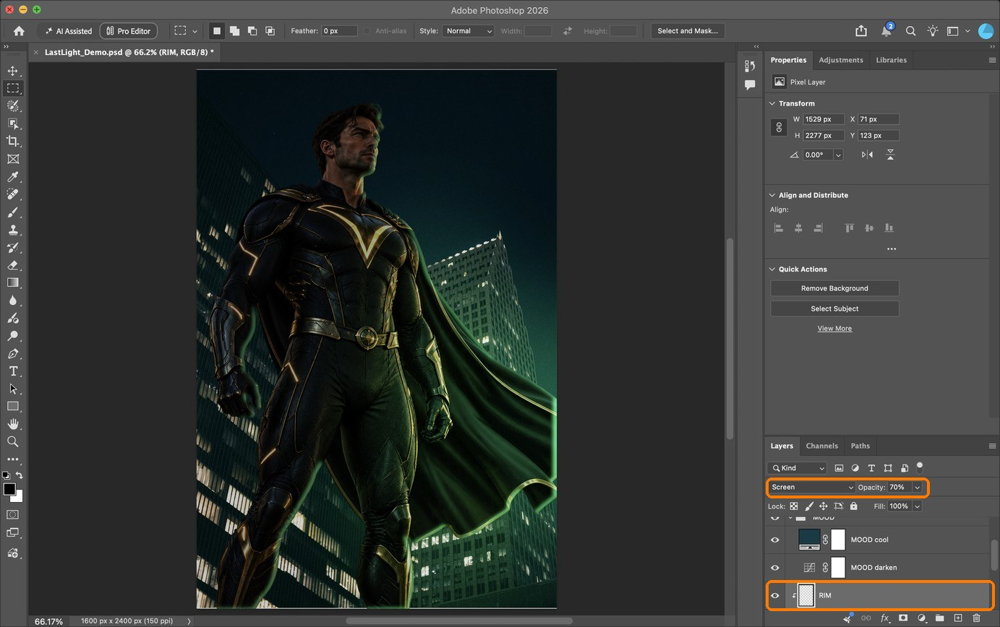
Boxes: RIM is set to Screen at 70 %; the small arrow beside its thumbnail means it is clipped to FIGURE.It should look like this
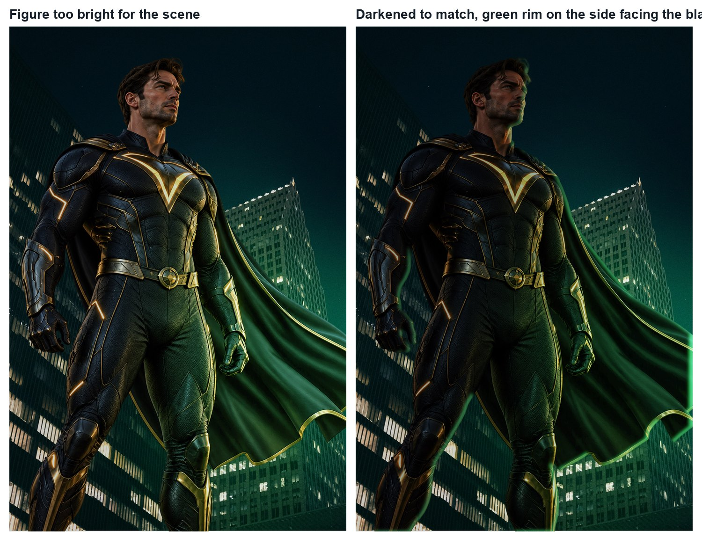
Before and after: the hero now sits in the night, with a green edge on the blast side only.
Earlier scripted-demo author note · before/after mistake evidence not retained: our first rim was set to Color Dodge and was invisible on the darkened figure: Color Dodge needs something bright underneath. Screen fixed it. The second try glowed outside the body because the layer had come unclipped: check for the small clipping arrow.
STEP CHECKLIST
GLOSSARY
Rim light: A thin highlight on the edge of a subject, from light behind or beside it
Clipping mask: Makes a layer affect only the layer directly below it
After matching the figure’s darkness, a rim light traces only the edge that faces the glow.
WHYA rim light separates the figure from the background and proves which way the light comes from. Light on the wrong side is the first thing viewers notice as fake.
CHECKThe figure is as dark as its surroundings, and a thin green rim appears only on the side facing the source.
FIXRim spilling past the edge? It must be clipped: Alt/Option-click between RIM and FIGURE. Glowing like neon? Lower RIM opacity or use Screen instead of Color Dodge.
WORKED EXAMPLE · DIFFERENT OBJECTOn a real film set a “kicker” light behind the actor does this job. You are painting that kicker.
STRETCH (AFTER THE CHECK PASSES)Add a soft cast shadow from the figure, pointing away from the light: duplicate the mask shape, fill it black, Distort it along the ground, blur it, set Multiply.
Method basis: A3 · V2 · V4. Values and sequence are authored for this project.
Review the context before opening the Coach; nothing is sent automatically.
Optional process note · Save to my journal
Notes save on this device. Review and paste in Student OS to save there; this button does not submit evidence.
08
Fill the air: glow, rays and haze
Procedure status · not yet run end to end. Manual action captures and genuine lesson mistake pairs are incomplete. Earlier scripted-demo pictures do not prove the procedure. Ask for a demonstration of unfamiliar controls.
IN SHORTRadial glow, zoom-blurred rays and clouds haze, all on Screen; group ATMOSPHERE.
READ ALOUD
DOCUMENT: LastLight_YourName.psd SELECT: The air around the light source TOOLS / ROUTE: Radial gradient on Screen · Filter › Blur › Radial Blur (Zoom) · Filter › Render › Clouds
Glow: add GLOW above PLATE and below FIGURE, Screen at 85%. Centre it near X 1300, Y 1560. The original scripted source uses #28E66E for the broad halo and #D7FFE1 for its core; a matching manual gradient is not yet run.
Rays: on RAYS, build strokes spreading from that source. Use Filter › Blur › Radial Blur, Zoom, Amount 100, Quality Good, with the blur centre at the source; then Gaussian Blur 8 px. Use Screen at 40%. Original ray shapes were scripted; this manual route is not yet run.
Haze: add HAZE, reset foreground/background with D, then Filter › Render › Clouds and Gaussian Blur 30 px. Use Screen at 20%. Keep it below FIGURE. This full creation route is not yet run manually.
Keep GLOW, RAYS and HAZE above PLATE and below FIGURE, grouped as ATMOSPHERE. The figure must occlude the source behind it. No atmospheric layer should become brighter than the source.
Group them as ATMOSPHERE. Toggle the group to check it helps and does not wash out the image.
Action by action: real Photoshop screenshots (orange boxes show where to look), and the result
1Three layers on Screen, between the plate and the figure, grouped as ATMOSPHERE.
In Photoshop
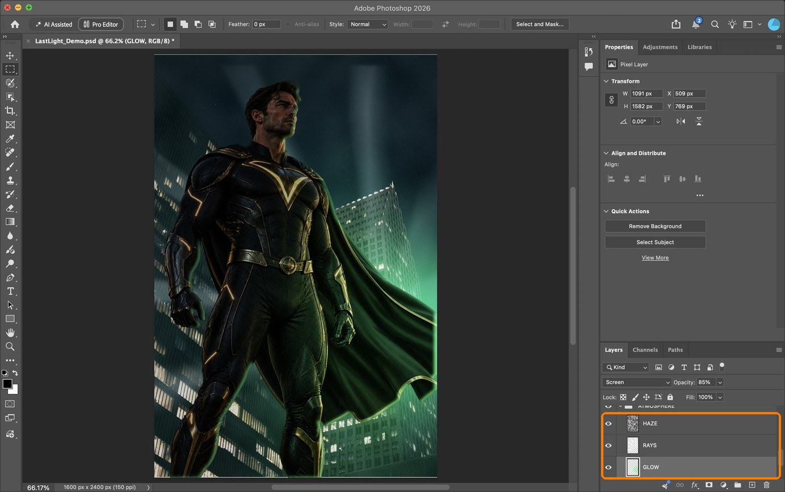
Box: HAZE, RAYS and GLOW inside the ATMOSPHERE group.It should look like this
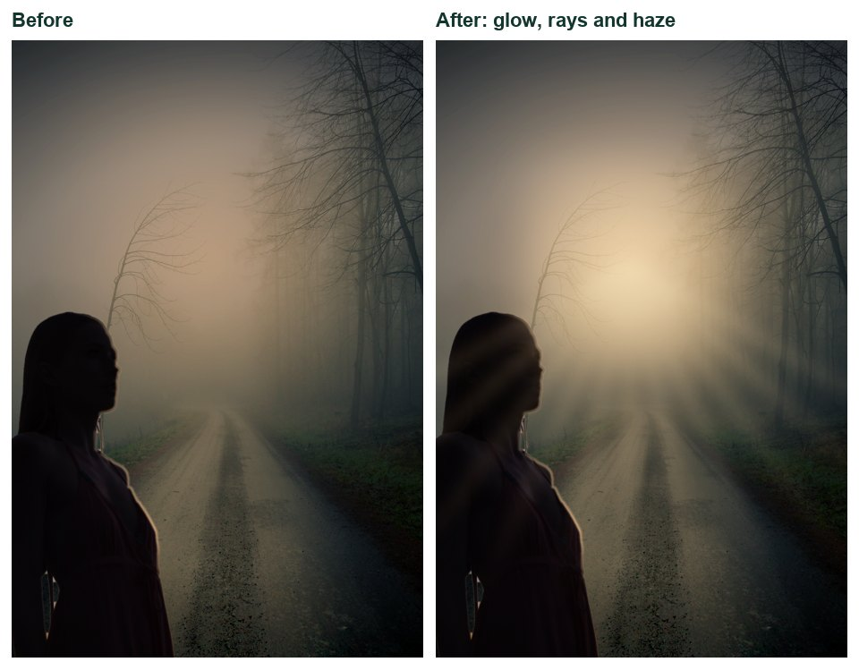
Before and after.
STEP CHECKLIST
GLOSSARY
Volumetric light: Light made visible by particles in the air
Screen: A blend mode that only lightens; black disappears
Before and after adding glow, rays and haze. The air now shows where the light is travelling.
WHYLight is only visible in the air when something (fog, dust, smoke) catches it. Adding it makes the light feel physical and pulls the eye to the source.
CHECKA glow around the source, rays that spread from it, haze that thickens with distance, and the figure still readable.
FIXRays point the wrong way? Undo the Radial Blur and set its centre on the source. Everything grey? Lower the haze opacity or mask it more.
WORKED EXAMPLE · DIFFERENT OBJECTThe demo’s fog already caught the light, so only a small glow and faint rays were needed.
STRETCH (AFTER THE CHECK PASSES)Add dust particles: a scatter brush with a few tiny white dots on Screen, mostly in the beam.
Method basis: A3 · V3. Values and sequence are authored for this project.
Review the context before opening the Coach; nothing is sent automatically.
Optional process note · Save to my journal
Notes save on this device. Review and paste in Student OS to save there; this button does not submit evidence.
09
Unify it with a colour grade and vignette
Procedure status · not yet run end to end. Manual action captures and genuine lesson mistake pairs are incomplete. Earlier scripted-demo pictures do not prove the procedure. Ask for a demonstration of unfamiliar controls.
IN SHORTGradient Map on Soft Light; optional Color Lookup; Curves vignette; export the key art.
READ ALOUD
DOCUMENT: LastLight_YourName.psd SELECT: Everything (top of the stack) TOOLS / ROUTE: Gradient Map · Color Lookup · Curves vignette
Add the original Gradient Map: 0% #06282E to 100% #E6FFD7, Soft Light, Opacity 32%. These values come from the original demo script; this full route is not yet run manually.
Add VIGNETTE with RGB curve points 0→0, 128→70, 255→205. Keep its mask white at the outer edges and paint black softly over the subject. This original exact curve is not yet run manually.
Toggle VIGNETTE. It should guide attention without a visible ring or hiding story information; refine that same mask rather than adding a second vignette.
Compare against your plan: is the brightest point still the light source? Is the figure’s face or silhouette still clear?
Save a flattened JPG copy as LastLight_YourName_keyart.jpg (File › Export › Export As) before you add type.
Action by action: real Photoshop screenshots (orange boxes show where to look), and the result
1Original Gradient Map #06282E to #E6FFD7 on Soft Light at 32%, then VIGNETTE Curves with the centre of its mask painted black. This earlier scripted capture does not prove the manual creation route.
In Photoshop
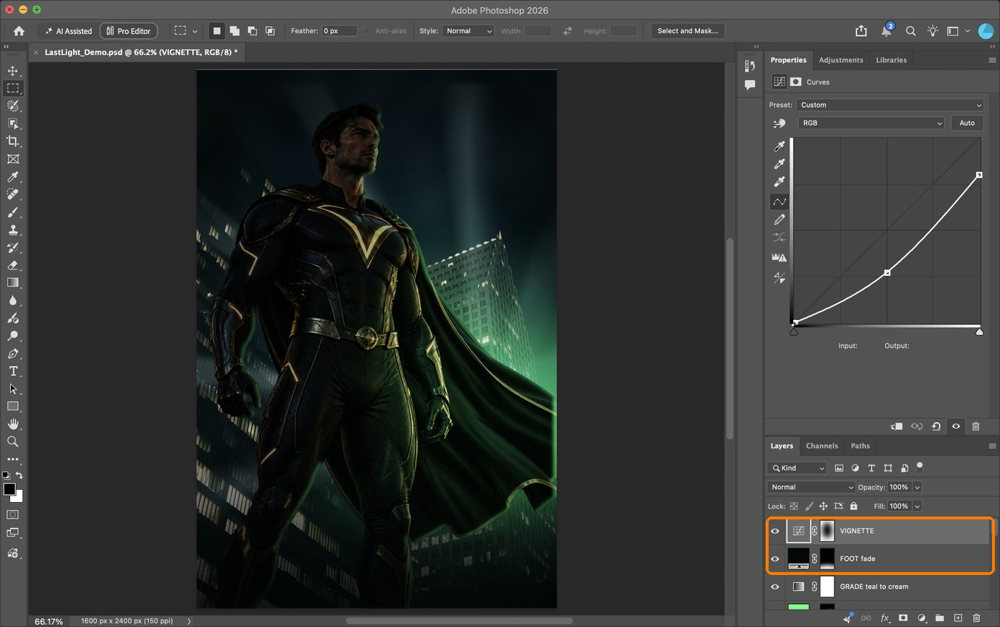
Box: VIGNETTE (note its mask: black in the middle) above GRADE.It should look like this
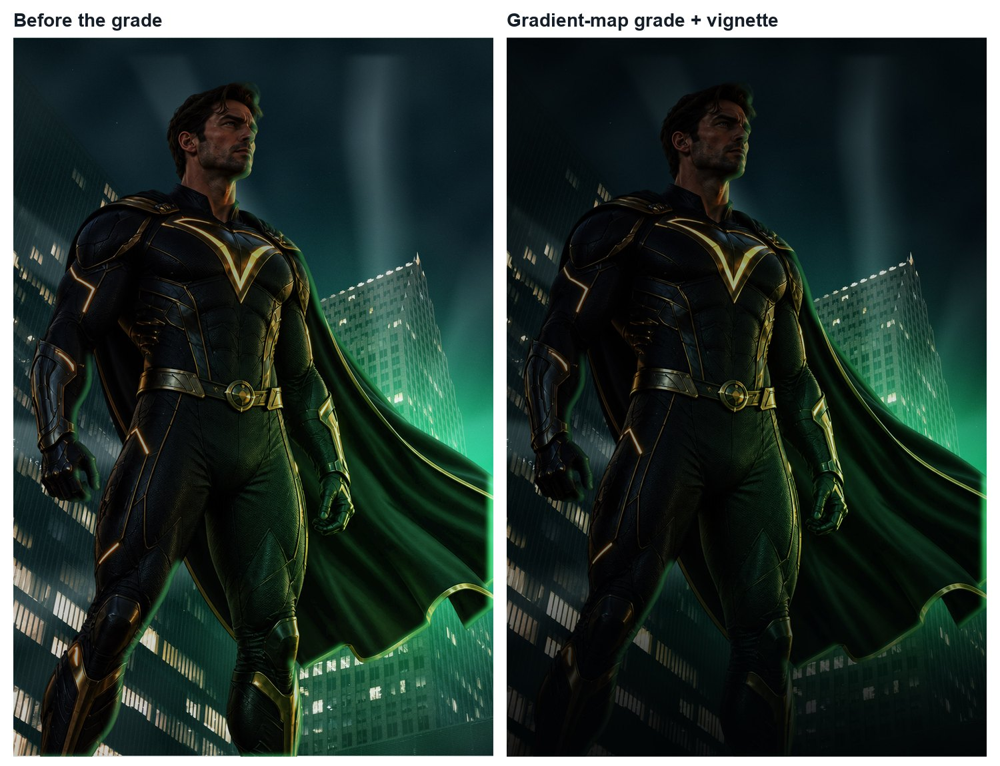
Before and after.
STEP CHECKLIST
GLOSSARY
Colour grade: A final colour treatment that unifies an image
Vignette: Darkened edges that frame the centre
Before and after a gradient-map grade and vignette. One colour story across the whole poster.
WHYA grade ties the plate, figure and effects into one colour world. A vignette keeps the eye inside the frame and on the light.
CHECKOne consistent colour mood, darker corners, and the light source still the brightest point.
FIXFaces look strange? Lower the Gradient Map opacity or mask it off skin. Vignette ringed? Use a bigger, softer brush.
WORKED EXAMPLE · DIFFERENT OBJECTPoster designers often finish the key art, lock it, and only then add type. That stops the type from making you over-adjust the image.
STRETCH (AFTER THE CHECK PASSES)Make two grades (warm hopeful, cold threatening) as layer comps and decide which fits your one-line story.
Method basis: A1. Values and sequence are authored for this project.
Review the context before opening the Coach; nothing is sent automatically.
Optional process note · Save to my journal
Notes save on this device. Review and paste in Student OS to save there; this button does not submit evidence.
Session C · Lesson 3 · mm12-26-s04-d03
Pro lighting: relight, glow and light wrap.
This is the level of the Spider-Man and high-end ad posters: a subject shot in flat light, relit by two coloured sources and a glowing object in the frame. You learn each move from the professionals, then apply it to your own key art.
TODAYEstimated 70-minute route: recall 5; theory/model 8; construction 37; check/practice or independent evidence 15; save/next target 5. Continue unfinished construction in the next studio block. Timing is not yet classroom-piloted.
10
Read the reference and add a weaker contrasting rim
Recall first (from last lesson, no peeking):
What colour were your light and your shadows, and why?
Which edge of the figure gets the rim light?
What does clipping a layer to FIGURE do?
Say or write your answers, then check them against your file.
Procedure status · not yet run end to end. Manual action captures and genuine lesson mistake pairs are incomplete. Earlier scripted-demo pictures do not prove the procedure. Ask for a demonstration of unfamiliar controls.
IN SHORTIdentify all sources; add a weaker clipped gold rim; compare source direction; retain two-image contextual evidence.
READ ALOUD
DOCUMENT: LastLight_YourName.psd · your FIGURE layer (the class hero has soft, even light) SELECT: FIGURE clipping stack; the far edge facing a planned weaker off-screen source TOOLS / ROUTE: Reference analysis · clipped paint layer · Screen
Inspect the original poster and an approved professional reference. Label the primary green blast, weaker warm source from the opposite side, and small warm chest emitter. Explain which surfaces each can reach.
Above the existing clipped RIM, add an empty layer named RIM secondary and clip it to FIGURE. Original script name: RIM cool, despite its gold colour. Keep this naming difference explicit.
Set Screen, layer opacity 80%, colour #FFBE5A (RGB 255, 190, 90). Paint a restrained highlight on the opposite edge with a soft brush at 10%; judge width at output size.
Toggle the new rim. It should provide separation without erasing the green side or making the whole outline neon. Full manual painting is not yet run; the original uses a scripted edge selection.
Compare two genuine other people’s posters. Record maker/date/source, visible form/content, a sourced historical or cultural fact, and a qualified emotional interpretation for each.
Watch the technique, then apply it to your poster:
Relighting: Changing the light on a subject after it was photographed
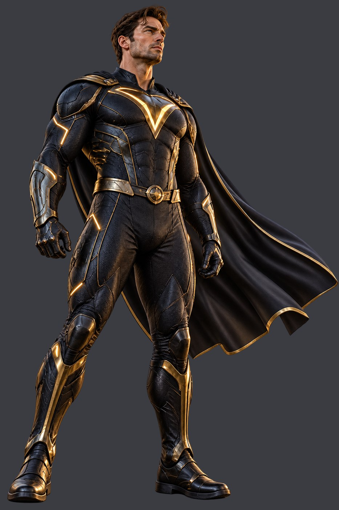
The class hero before any lighting: soft, even light. That is ideal for relighting, because you add every highlight on purpose.
WHYAdditional sources must be planned and consistent. A weaker contrasting rim can separate the far edge while preserving the main source’s direction.
CHECKThe green primary light remains dominant across broad surfaces; the warm secondary rim is narrow and motivated. Submit the sourced two-image comparison for 1.2.
FIXWhole outline bright? Restrict the secondary rim to its facing edge. A rim outside the body indicates a clipping or mask problem.
WORKED EXAMPLE · DIFFERENT OBJECTWorked on a different subject: a student relit a flat photo of a bike under a streetlight. Warm key from the lamp above, cool rim from the city behind.
STRETCH (AFTER THE CHECK PASSES)Add a third source: a faint bounce light from the ground in a colour picked from the floor.
Method basis: V4 · V6 · V2. Values and sequence are authored for this project.
Review the context before opening the Coach; nothing is sent automatically.
Optional process note · Save to my journal
Notes save on this device. Review and paste in Student OS to save there; this button does not submit evidence.
11
Put a glowing object in the frame and let it light the subject
Procedure status · partial application check. Original poster · EMBLEM glow’s actual Linear Dodge (Add) / 100% state was inspected. Painting the glow and cast-light masks manually to match this image is not yet run. Full action coverage and the independent cold run remain pending.
IN SHORTClipped cast Curves; black mask; reveal nearby surfaces; Add halo/core; compare.
READ ALOUD
DOCUMENT: LastLight_YourName.psd · FIGURE clipping stack and chest emblem SELECT: Chest emblem around X 730, Y 728 and the nearby chest/jaw surfaces TOOLS / ROUTE: Clipped Curves mask · soft paint · Linear Dodge (Add)
Above the figure clipping stack, add EMBLEM cast, clip it to FIGURE, and set RGB 0→0, 100→180, 255→255. Invert its mask to black.
With a soft white brush at 10%, reveal light on nearby chest planes and the underside of the jaw. The source is the chest, not an object in the hand.
Add EMBLEM glow below the final grade. Set Linear Dodge (Add), layer opacity 100%. Centre its paint near X 730, Y 728.
Paint a broad #FFAA3C halo at 30% brush opacity and a smaller #FFE196 core at 70%. Original scripted halo radius 230/feather110; core radius60×70/feather26. The soft-brush match remains not yet run.
Toggle glow and cast separately. The emitter needs both a visible core and illumination on nearby surfaces. A larger halo alone cannot make it belong.
Action by action: real Photoshop screenshots (orange boxes show where to look), and the result
1Select EMBLEM glow (2). Its blend mode is Linear Dodge (Add) (1), with layer Opacity 100%. The warm source must also brighten the chest and underside of the jaw through the separate EMBLEM cast mask.
In Photoshop
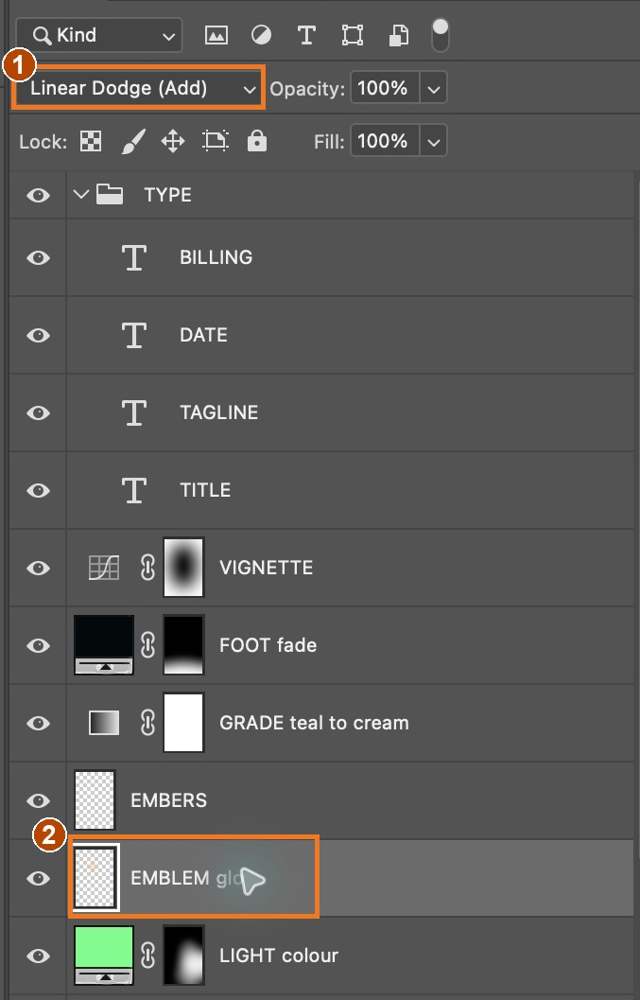
1: Linear Dodge (Add). 2: EMBLEM glow. The layer was created in the original scripted demo.It should look like thisA gold source on the chest lights nearby surfaces. A larger halo alone cannot replace cast light.
Watch the technique, then apply it to your poster:
Cast light: Light from one object landing on another
Linear Dodge (Add): A blend mode that adds brightness, useful for glows
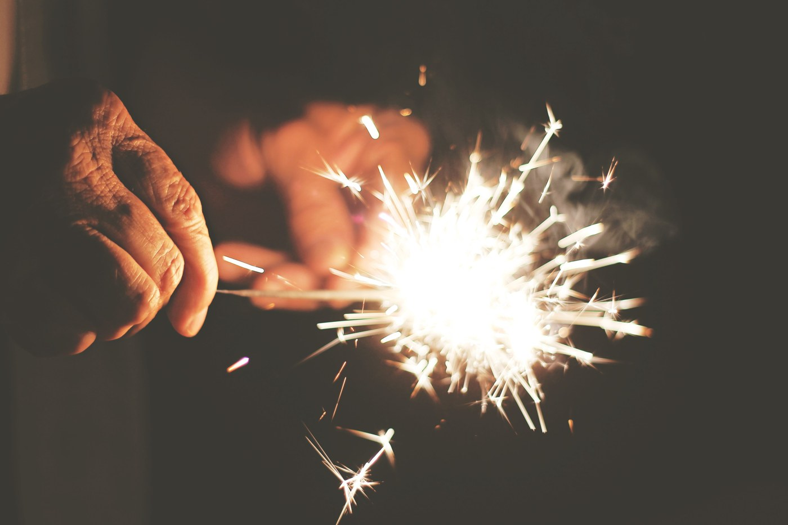
Reference plate (CC0): a real handheld light. Notice the bright, warm fall-off on the fingers and the darkness just beyond. Your cast light must match this.
WHYAn emitter illuminates nearby surfaces as well as itself. Cast light makes the chest glow feel embedded in the scene.
CHECKSmall warm chest core, wider restrained halo, and cast illumination on nearby chest and jaw; broad green lighting stays readable.
FIXSticker-like glow? Compare nearby surfaces with glow hidden and visible; inspect the cast mask and its clipping before enlarging the halo.
WORKED EXAMPLE · DIFFERENT OBJECTThe Spider-Man poster uses the same idea with the glowing logo and city lights. Every glow in the frame lights something next to it.
STRETCH (AFTER THE CHECK PASSES)Make the object flicker in the teaser: keyframe the glow and cast-light layer opacities at slightly different values.
Method basis: V7 · V8 · V1. Values and sequence are authored for this project.
Review the context before opening the Coach; nothing is sent automatically.
Optional process note · Save to my journal
Notes save on this device. Review and paste in Student OS to save there; this button does not submit evidence.
12
Blend the edges with light wrap, add particles and grade
Procedure status · partial application check. Original poster · the existing LIGHT WRAP Smart Filter was opened and Gaussian Blur 30 px confirmed in Photoshop 2026. Its Screen / 55% state was checked. Creation of the duplicate, clipping and new mask from scratch is not yet run. Full action coverage and the independent cold run remain pending.
IN SHORTLight wrap on facing edges; embers in the beam with depth; grade; compare with the pro final.
READ ALOUD
DOCUMENT: LastLight_YourName.psd SELECT: The subject’s edges and the air around the light TOOLS / ROUTE: Duplicate PLATE · Smart Object · Gaussian Blur · clipping mask · Screen · particle brush · Gradient Map
Light wrap creation (not yet run from scratch): duplicate PLATE to LIGHT WRAP above the FIGURE clipping stack; keep it a Smart Object and clip it to FIGURE. Apply Gaussian Blur 30 px, Screen, Opacity 55%. Add a black mask and reveal only edges facing bright background areas. The existing original filter and blend settings were checked; the full duplication/clipping/masking route remains unverified.
Particles: add EMBERS, Color Dodge at 90%. The original uses #96FFAA particles with varied opacity and Gaussian Blur 1.5 px, constructed by script. A matching manual scatter-brush setup and action captures are not yet run.
Depth: blur the particles nearest the camera more than the ones near the subject.
Original grade: Gradient Map from #06282E (RGB 6, 40, 46) at 0% to #E6FFD7 (230, 255, 215) at 100%, Soft Light at 32%. Keep the chest emblem brightest. Creation of this exact grade remains not yet run manually.
Export the finished key art. Compare side by side with the Nour Art or Mir Rom final: name one thing yours does as well and one thing to improve.
Action by action: real Photoshop screenshots (orange boxes show where to look), and the result
1Select LIGHT WRAP (3). The actual original uses a duplicated PLATE Smart Object clipped into the figure stack, Screen (1), Opacity 55% (2), and a mostly black mask. Double-click Gaussian Blur (4) under Smart Filters.
In Photoshop
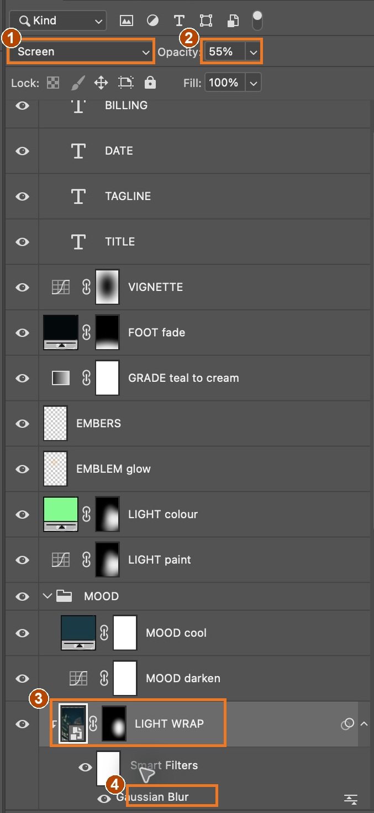
1: Screen. 2: 55%. 3: clipped LIGHT WRAP Smart Object and mask. 4: Gaussian Blur.It should look like thisBackground light subtly overlaps facing edges while the figure remains visible.
2In Gaussian Blur, set Radius 30 pixels (1), keep Preview on and click OK (2). Restrict the wrap with its mask; do not soften the entire hero.
In Photoshop
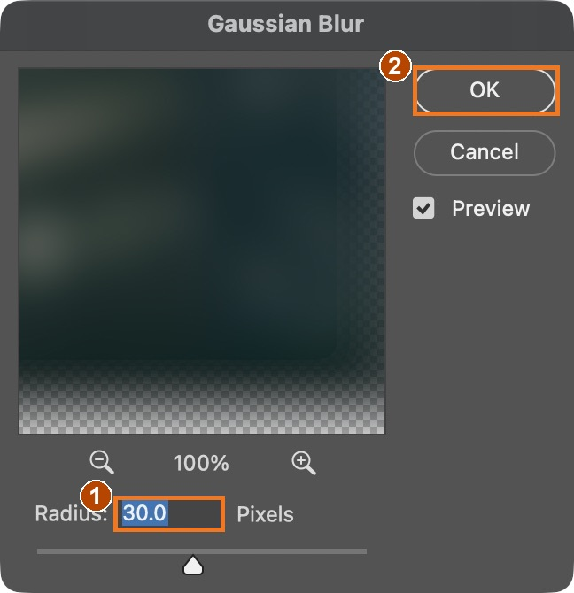
1: 30 px. 2: OK. This filter dialog was actually opened and confirmed.It should look like thisThe original hero remains sharp; the background copy supplies soft edge light.
Watch the technique, then apply it to your poster:
Light wrap: Background light spilling around a subject’s edges
Particles: Small bright specks such as embers or dust that show light in the air
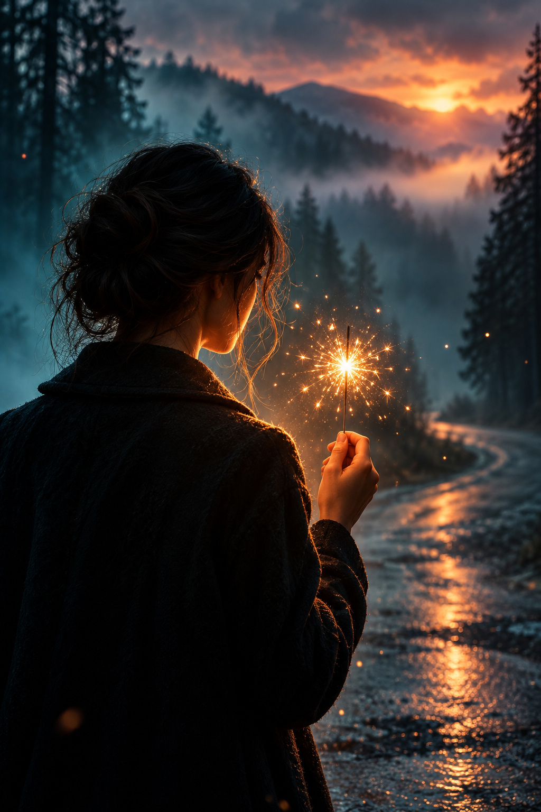
Exemplar concept art (AI-generated, labelled): the pro-level finish to aim for. Your poster is built in Photoshop.
WHYLight wrap is how compositors make a subject sit inside a bright scene instead of on top of it. Particles show the air the light travels through. The grade ties it together.
CHECKEdges that pick up the background light, particles concentrated in the light beam with depth, and a unified grade with the glowing object brightest.
FIXLight wrap glows all round the subject? Mask it to the edges that face bright areas only. Particles look flat? Vary size and blur, and keep most of them in the light.
WORKED EXAMPLE · DIFFERENT OBJECTNour Art’s high-end ad posters finish nearly every composite with a light wrap pass and a few particles in the light.
STRETCH (AFTER THE CHECK PASSES)Add a lens flare or anamorphic streak from the glowing object, kept subtle.
Method basis: V4 · V9 · V3. Values and sequence are authored for this project.
Review the context before opening the Coach; nothing is sent automatically.
Optional process note · Save to my journal
Notes save on this device. Review and paste in Student OS to save there; this button does not submit evidence.
Session D · Lesson 4 · mm12-26-s04-d04
Type it. Move the light. Make it move.
A poster needs type that fits its light. Then the real test: your director wants the light on the other side, and you have one period.
TODAYEstimated 70-minute route: recall 5; theory/model 8; construction 37; check/practice or independent evidence 15; save/next target 5. Continue unfinished construction in the next studio block. Timing is not yet classroom-piloted.
13
Set the poster type
Recall first (from last lesson, no peeking):
Locate the green blast, weaker opposite rim source and warm chest emitter. Which surfaces does each affect?
What is light wrap for?
Why can a small bright emblem coexist with a primary blast lighting broad surfaces?
Say or write your answers, then check them against your file.
Procedure status · not yet run end to end. Manual action captures and genuine lesson mistake pairs are incomplete. Earlier scripted-demo pictures do not prove the procedure. Ask for a demonstration of unfamiliar controls.
IN SHORTTitle, tagline, billing block, date; align; keep clear of the light and face.
READ ALOUD
DOCUMENT: LastLight_YourName.psd SELECT: Title, tagline, billing block, date TOOLS / ROUTE: Type tool (T) · Character panel · Align
Title: select Type (T). The original uses Futura Condensed ExtraBold, 150 pt, #FFD696, tracking 40, centred at X 800 with baseline Y 2030. This exact manual type route is not yet run; the original was scripted.
Tagline: Futura Medium, 20 pt, #EBEBEB, tracking 240; centre X 800, baseline Y 2100. Preserve space between title and tagline.
Date: Futura Medium, 26 pt, #FFD696, tracking 400; centre X 800, baseline Y 2225. Billing: Arial Narrow, 12 pt, #C8C8C8, tracking 40; centre X 800, baseline Y 2300.
Use your own film title, tagline and fictional credits. These installed fonts are demo references; choose a school-available licensed substitute if unavailable. Font binaries are not included.
View at intended output size. Check reading order, contrast and space around the face/light, then save. Manual type construction and a matching fresh result remain pending.
Action by action: real Photoshop screenshots (orange boxes show where to look), and the result
1Type tool (T): title, tagline, date and billing block, centred on one line.
In Photoshop
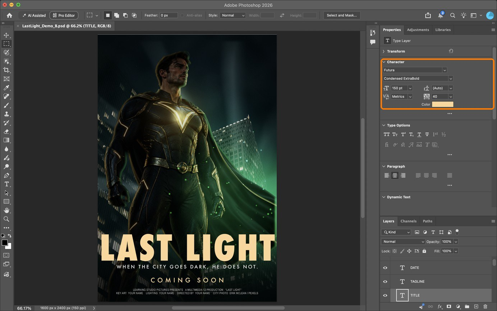
Box: the Character settings for the title (Futura Condensed ExtraBold, 150 pt, colour sampled from the light).It should look like this
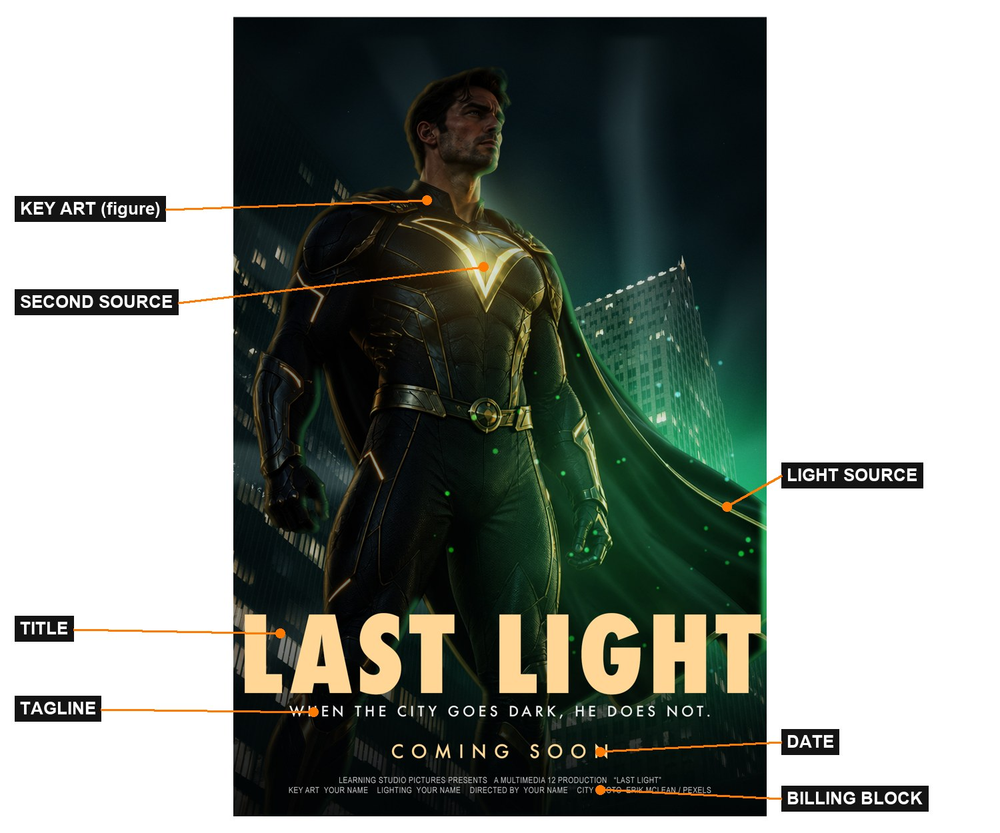
What each piece of type is for.
STEP CHECKLIST
GLOSSARY
Tagline: A short line that sells the story
Billing block: The condensed credit lines at the bottom of a film poster
Tracking: The overall spacing between letters
Poster anatomy: title, tagline, key art, light source, billing block and date, each with one job.
WHYPoster type follows a hierarchy readers expect: title first, tagline second, credits last. Type in the light’s colour makes it feel part of the same world.
CHECKFour type elements in clear order of size, aligned, in two typefaces at most, and none covering the light or the face.
FIXTitle hard to read? Add a subtle dark Curves behind it, masked to the title area. Billing block too wide? Reduce tracking or font size, not the letter width.
WORKED EXAMPLE · DIFFERENT OBJECTThe demo’s title is set in Futura Condensed ExtraBold, tagline and date in Futura Medium, and the billing block in Arial Narrow.
STRETCH (AFTER THE CHECK PASSES)Add a small studio logo you design yourself, placed in the billing block.
Method basis: S2 · V5. Values and sequence are authored for this project.
Review the context before opening the Coach; nothing is sent automatically.
Optional process note · Save to my journal
Notes save on this device. Review and paste in Student OS to save there; this button does not submit evidence.
14
Practical check: move the light
Procedure status · not yet run end to end. Manual action captures and genuine lesson mistake pairs are incomplete. Earlier scripted-demo pictures do not prove the procedure. Ask for a demonstration of unfamiliar controls.
IN SHORTSave A; interpret your card; plan and revise independently; compare; submit B and defend.
READ ALOUD
DOCUMENT: LastLight_YourName.psd · the director’s note SELECT: Your editable poster and assigned director card TOOLS / ROUTE: Independent decisions using taught tools
Save a separate version and export poster A before making changes.
Your teacher assigns one of the four director cards in the downloaded template. State the changed requirement and predict its effect on the image.
Plan and make your own response. Keep the original film, intended audience and editable source file.
Compare A and B against the assigned card at the intended viewing size. Record one observed mismatch, your revision and its result.
Export poster B and submit A, B, the layered PSD and a brief defence of two decisions, one trade-off and one remaining limitation.
Independent evidence: no model answer is supplied. Your teacher assesses the response to your assigned card, the editable controls and your reasoning.
STEP CHECKLIST
GLOSSARY
Consistency: Every lit surface agreeing on one light direction
WHYA changed requirement tests whether you can transfer the lighting ideas to a new situation.
CHECKThe revised image meets the assigned card, preserves the film and audience, and has coherent motivated lighting. You can locate and defend the relevant editable controls.
FIXRestate the requirement and compare it with your result. Describe the mismatch before choosing a control. The Coach may explain terminology; the assessed edits are your decisions.
WORKED EXAMPLENone today: this is independent evidence. Use the success criteria.
STRETCH (AFTER THE CHECK PASSES)After teacher feedback, respond to a different director card independently.
Method basis: A2. Values and sequence are authored for this project.
Review the context before opening the Coach; nothing is sent automatically.
Optional process note · Save to my journal
Notes save on this device. Review and paste in Student OS to save there; this button does not submit evidence.
15
Make the light move: a 5-second teaser
Procedure status · not yet run end to end. Manual action captures and genuine lesson mistake pairs are incomplete. Earlier scripted-demo pictures do not prove the procedure. Ask for a demonstration of unfamiliar controls.
IN SHORTVideo Timeline; opacity keyframes for light, atmosphere and title; render MP4; hand in.
READ ALOUD
DOCUMENT: LastLight_YourName.psd SELECT: LIGHT paint, ATMOSPHERE and RIM TOOLS / ROUTE: Window › Timeline · Create Video Timeline · Opacity keyframes · Render Video
Choose Window › Timeline and click Create Video Timeline. Set the length to 5 seconds (drag the end of the work area).
Open the LIGHT paint layer’s track, click the stopwatch next to Opacity, and set keyframes: 0 % at 0 s, 100 % at 2 s.
Add a flicker or breathing light: a few quick opacity keyframes on ATMOSPHERE (for example 60 %, 90 %, 70 %) between 2 s and 4 s.
Fade the title in from 0 % to 100 % between 3 s and 4 s. Hold the full poster to 5 s.
Choose File › Export › Render Video, H.264, 1080 × 1620, and save LastLight_YourName_teaser.mp4. Hand in A, B, the teaser, the PSD and your explanation.
STEP CHECKLIST
GLOSSARY
Keyframe: A saved value at a moment in time; the software fills in the frames between
Motion poster: A poster with subtle movement, made for screens
WHYFilm posters now run as motion posters on social media and in cinemas. Because your light is on its own layers, you can animate it without redrawing anything.
CHECKA 5-second MP4 where the light fades up, the atmosphere flickers, and the title appears, plus all hand-in files.
FIXNo Timeline panel? Choose Window › Timeline. Render too slow? Use 720 × 1080. Keyframes not saving? Click the stopwatch first.
WORKED EXAMPLE · DIFFERENT OBJECTA student’s “The Late Shift” teaser flickered the fridge light twice before the title appeared. It lasted four seconds and was very effective.
STRETCH (AFTER THE CHECK PASSES)Add a slow push-in: keyframe the key art’s Transform from 100 % to 104 % over 5 seconds.
Method basis: A4. Values and sequence are authored for this project.
Review the context before opening the Coach; nothing is sent automatically.
Optional process note · Save to my journal
Notes save on this device. Review and paste in Student OS to save there; this button does not submit evidence.
Before you submit
Student QA.
Copy a focused Coach context
Guided work: explain a tool, ask a diagnostic question or suggest a check. Independent practical: explain terminology only; do not choose edits or provide a model answer. Do not paste personal information.
Evidence conversation
Keep it short and specific.
SENTENCE FRAMESMy light comes from ___, so the highlights fall on ___. · To move the light I changed ___ because ___. · The warm/cool contrast makes the viewer feel ___.
Misty road by a forest (Unsplash).jpg · Bara Cross baracross · CC0 · source. Processed as stated in each caption.
Stars Flashlight Cajon Pass (Unsplash).jpg · Jeremy Bishop tidesinourveins · CC0 · source. Processed as stated in each caption.
Sparkler@TraphillNC.jpg · Kelley Bozarth · CC0 · source. Processed as stated in each caption.
Fearless male in medical uniform and superhero costume · Klaus Nielsen · Pexels licence (free to use and modify) · source. Processed as stated in each caption.
View rendered from the German Town Street HDRI · Poly Haven · CC0 · source. Processed as stated in each caption.
Figures marked Illustration are drawn, not screenshots. Step values are starting points authored for this project. Draft for teacher review; not yet classroom-piloted.